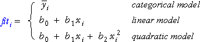
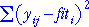
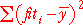
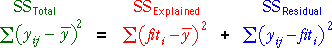

| The total sum of squares reflects the overall variability of the response. |
Summarising explained and unexplained variation
Evidence for a factor affecting the response is strongest when the variation explained by the model is high relative to the unexplained variation. In this page, we describe quantities that summarise these two types of variation.
These summaries are based on three types of value.

Overall variation (total sum of squares)
We summarise response variation using differences between the response values and their mean.
| The total sum of squares reflects the overall variability of the response. |
Note that the sample variance of all n response values is the total sum of squares divided by (n - 1).
Unexplained variation (residual sum of squares)
We summarise unexplained variation using differences between the observed and fitted values — the model residuals.
|  | This sum of squares summarises how much the response values vary around our best prediction of the response for that factor level. |
This is also called the residual sum of squares.
Explained sum of squares
The explained sum of squares summarises the variability of the model predictions — the fitted values. If the fitted values are similar for all factor levels, there is little explained variation, whereas if the fitted values differ between factor levels, this implies systematic differences between the factor levels. This sum of squares therefore summarises explained variation.
|  | The explained sum of squares measures the variability of the fitted values. |
Note that the summation here is over all observations in the data set — if ni experimental units get treatment i, each of them separately contributes an equal amount to the explained sum of squares.
Relationship between sums of squares
The following relationship is difficult to prove but is important.

Illustration: categorical factor
The display on the left below shows the results of a completely randomised experiment with 8 replicates at each of 4 factor levels.
The three jittered dot plots on the right show the values whose squares are summed to give the total, explained and unexplained (residual) sums of squares. Click on each of these three plots to display the quantities on the diagram on the left. The sums of squares summarise the size of the three components.
Use the slider to adjust the data values and observe how the relative size of the variation between and within treatments is reflected in the size of these sums of squares.
Evidence for a difference between the factor levels is strongest when the explained sum of squares is much higher than the residual sum of squares.
Select Two replicates from the pop-up menu and repeat.
Illustration: linear model
The diagram below is similar but describes variation in an experiment with a numerical factor. In order to illustrate the explained and residual sums of squares better, we have chosen an experiment with a single replicate at each of 9 equally-spaced values for the factor.
The three jittered dot plots on the right again show the values whose squares are summed to give the total, explained and residual sums of squares. Click on each of these three plots to display the quantities whose squares are being summed on the diagram on the left.
Adjust the slider and again observe how the evidence for a relationship is described by the relative size of the explained and residual sums of squares.
Evidence for a difference between the treatment means is strongest when the explained sum of squares is much higher than the residual sum of squares.